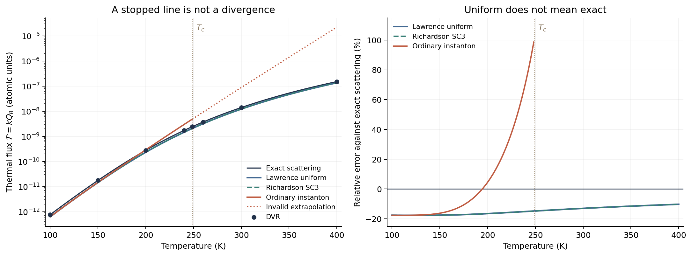

Chemical Reaction Computation - Part VI
Instanton Rates Across Crossover
The ordinary instanton curve in Part V stopped at a vertical line marked \(T_c\). It did not become infinite there: we stopped drawing a formula outside its domain of validity. But the physical reaction rate does not stop. What has to change in the calculation?
We already have a useful answer to what an instanton does: find the important contribution, estimate its neighborhood, and obtain a rate. This article stays with that logic. We will locate the approximation that fails, distinguish two ways of repairing it, and test them on the same one-dimensional barrier. No new derivation of the thermal rate formula, WKB attenuation, or the ring-polymer Hamiltonian is needed; their homes are Part II, Part V, and the path-integral introduction.
Two landmarks organize the discussion: Jeremy Richardson's 2016 microcanonical approach and Joseph Lawrence's 2024 uniform thermal theory. They are not simply two versions of the same numerical integration. The first retains energy-resolved information and integrates it; the second develops a controlled approximation to the integral that survives a change in its dominant contribution.
1. The step between finding an energy and obtaining a rate
Recall just the target and the ordinary one-dimensional approximation:
Finding \(E_*\) is the first job. Turning the local peak into an area is the second. The last line follows by replacing the below-barrier integral with a Gaussian and extending its limits:
This arrow is the central issue. It is sensible when the important neighborhood is well inside the integration interval. When the peak approaches \(V_0\), the extension includes energies outside the domain of the below-barrier approximation. A number can still come out of the formula even though this step is no longer justified.
For the Eckart model in Part V, \(E_*/V_0=(T/T_c)^2\). Its formal continuation is therefore above the barrier for \(T>T_c\). This is not an admissible ordinary below-barrier instanton. The curve has a finite left-hand limit at \(T_c\); loss of validity and numerical divergence are different statements.
2. What ordinarily replaces the instanton above crossover?
For a smooth barrier whose nontrivial periodic orbit collapses continuously to the transition state, the required imaginary period \(\tau=\beta\hbar\) reaches \(\tau_c=2\pi/\omega_b\) at \(T_c\). A shorter nontrivial orbit of that family is unavailable. The standard instanton formula itself does not prescribe a high-temperature continuation.
A practical calculation may switch to classical TST or to its inverted-parabolic-barrier correction:
This is a different approximation, not a collapsed point inserted into the ordinary instanton formula. Its denominator vanishes as \(T\to T_c^+\). Thus the ordinary instanton need not diverge, while this high-temperature replacement does. Switching between them leaves the crossover region unresolved.
3. Richardson: improve transmission, then integrate it
Richardson's 2016 one-dimensional SC3 construction makes two changes. It replaces the leading transmission exponential by a Kemble-type expression below the barrier, uses the local inverted parabola above it, and evaluates the thermal integral numerically:
The second line is exact for an inverted parabola. It is a local quadratic approximation for a general barrier, not an exact rule that every barrier must transmit half the incident flux at its top. The first line uses the actual action and can retain nonparabolic barrier shape. Deep below the barrier it reduces to \(e^{-W/\hbar}\). Equations (17) and (19) of Richardson's paper specify this one-dimensional route.
The gain is not obtained merely by integrating the old WKB exponential more accurately: the input transmission has changed too. One computes a family of action values, constructs \(P(E)\), and reuses it for different thermal weights. In several dimensions the microcanonical problem also requires a consistent accounting of energy in transverse vibrations; the scalar one-dimensional expression is not the whole molecular theory.
4. Lawrence: repair the peak-to-area approximation
Could we retain a compact thermal approximation instead of numerically resolving the entire energy dependence? Lawrence's answer is to treat the stationary point and the integration boundary together. The clearest entry point for our model is Appendix A of the 2024 paper. Its main derivation instead starts from a real-time flux-correlation function and establishes the multidimensional result.
Below the barrier, the improved transmission has a geometric expansion:
The ordinary deep-barrier approximation keeps its first term. Each term leads to an integral and a stationary condition:
For \(n=1\), this is the same \(E_*\) condition as before. The main repair is not a better root finder. It is a better way to evaluate the integral when that root approaches its boundary. For \(E>V_0\), the continued action is negative and a different convergent geometric expansion is used. Keeping both sides consistently is essential; continuing only the first exponential is not the new theory.
A small integral that explains the error function
Consider a Gaussian whose center moves relative to a fixed boundary. This is a mathematical illustration, not the final reaction-rate formula:
With \(z=(x-a)/(\sqrt2\sigma)\), its lower limit becomes \(-a/(\sqrt2\sigma)\), so
Far inside the interval, the result is essentially the full Gaussian area. At the boundary it is half that area. With the center outside, the remaining tail still contributes. Nothing in the integral is required to disappear or diverge when the center crosses the endpoint.
Lawrence uses Bleistein's uniform asymptotic method to handle the corresponding transition in the rate integral. Importantly, simply multiplying an old instanton rate by a truncated-Gaussian factor is insufficient: the prefactor and boundary contribution must be treated consistently too.
The new mathematical step: match the prefactor at both locations
In the paper's time-domain derivation, a variable \(v=e^{-\omega_b t}\) places the long-real-time boundary at \(v=0\). This \(v\) is not an energy. An action-preserving transformation maps the boundary to \(u=0\) and the stationary point to \(u=b\):
This is a change of variable, not an assumption that the original potential is harmonic. Instead of replacing the entire prefactor by its stationary value, retain a linear function matching both relevant points:
The remaining terms vanish at both locations and are higher order in this expansion. Completing the square gives the error-function integral; integrating \((u-b)e^{-(u^2/2-bu)/\hbar}\) gives \(\hbar\). Together these yield
The second term explains why the repair is not just “half a Gaussian.” At \(b=0\), the difference quotient is taken by its finite limit. This follows the structure of Lawrence's equations (36)–(41); it is the local uniform construction, not yet the complete multi-orbit rate.
5. What actually happens above \(T_c\)?
The stationary contribution dominates at low temperature. Near crossover, stationary and endpoint contributions must be combined. On the high-temperature side, endpoint behavior takes over and connects to the parabolic correction to TST. The combined result is finite even though some separately written terms are singular.
No ordinary real-coordinate high-temperature periodic instanton has been resurrected. Where the formula calls for an action beyond the ordinary orbit's domain, it uses analytic continuation. In general this requires additional treatment; Lawrence discusses extrapolation from crossover data. Our symmetric Eckart example has an analytic action, so that continuation is explicit. This convenience must not be mistaken for a universally automatic molecular algorithm.
The complete one-dimensional formula used in the benchmark
Write \(\mathcal F_n=k_{n,\mathrm{inst}}Q_R\). In one dimension there is no transverse vibrational factor, and Lawrence's equations (51)–(54) become
The ordinary instanton is the \(n=1\) contribution in its low-temperature regime. Repeated orbits, indexed by \(n\), are repeated auxiliary trajectories, not \(n\) successive chemical reactions. Their alternating signs originate in the transmission expansion.
Why retain more than one? The parabolic term has poles at \(\tau=n\tau_c\), or \(T=T_c/n\). Near each pole it contains a term proportional to \((-1)^n/(\tau-n\tau_c)\); the corresponding endpoint correction has the opposite coefficient. They cancel in the sum. Keeping only the one-orbit version repairs the first crossing but leaves later poles. Our implementation includes the converged multi-orbit sum and evaluates the cancellation algebraically, not by deleting singular temperatures.
“All temperatures” describes uniform semiclassical behavior across these crossovers, not an exact quantum solution or a theorem for every potential. The derivation assumes a family that collapses smoothly to the transition state. Interacting instantons and other bifurcation structures require further work; numerical convergence does not remove those assumptions.
6. One barrier: does the repaired formula work?
We retain the Hamiltonian from Part V:
Here \(T_c=248.799654\) K. The observable remains the thermal flux \(\mathcal F=kQ_R\) in atomic units; all rate ratios use the same reactant normalization. This is a scattering benchmark, not an absolute molecular rate in s\(^{-1}\).

The table gives approximate flux divided by exact quantum flux. A value of 1 means agreement. “WKB” retains the deliberately simple convention of Part V: exponential transmission below the barrier, unit transmission above it, and numerical thermal averaging.
| Temperature (K) | Ordinary instanton | WKB | SC3 | Lawrence |
|---|---|---|---|---|
| 100 | 0.8239 | 0.8240 | 0.8239 | 0.8239 |
| 150 | 0.8377 | 0.8335 | 0.8244 | 0.8244 |
| 200 | 1.0453 | 0.9040 | 0.8350 | 0.8350 |
| 240 | 1.7213 | 0.9845 | 0.8490 | 0.8490 |
| 248.799654 (\(T_c\)) | Not used | 1.0012 | 0.8522 | 0.8522 |
| 260 | Not used | 1.0213 | 0.8563 | 0.8563 |
| 300 | Not used | 1.0806 | 0.8701 | 0.8701 |
| 400 | Not used | 1.1585 | 0.8975 | 0.8975 |
At 240 K the ordinary instanton overestimates the flux by 72%, while Lawrence is about 15% low. At \(T_c\), the ordinary formula's formal value is still finite—about twice exact—but is not an admissible interior-saddle estimate. Lawrence is finite there without a special plot cutoff. At 400 K it remains about 10% low. The improvement is a reliable crossover construction, not elimination of all semiclassical error.
The old WKB result is actually closer to exact at some intermediate temperatures. Errors in transmission and thermal integration can compensate, and a valid asymptotic construction need not win pointwise for a finite barrier. This benchmark should not be read as a ranking in which every new method must beat every older number.
SC3 and Lawrence differ by less than 0.006% at the tabulated temperatures. That is a property of this particularly simple model and these two implementations, not a proof that the general theories are equivalent. Lawrence was evaluated from the uniform action formula, not assigned the SC3 quadrature result. The two evaluations are implemented separately.
How the numerical calculation is organized
- Keep the model fixed. Reuse the potential, mass, action, and scattering conventions from Part V.
- Compute SC3 independently. Integrate its piecewise transmission over energy with Boltzmann weights.
- Compute Lawrence independently. Use the analytic Eckart action and its derivatives in the uniform multi-orbit expression. Converge the sum and test the combined limits at \(T_c\) and \(T_c/2\).
- Check against quantum mechanics. Integrate the exact analytic transmission and separately solve the sinc-DVR Hamiltonian, using the symmetrically thermalized flux–side plateau from Part V.
A pole-free specialization that makes the code reproducible
In atomic units \(\hbar=1\), define \(r=\tau/\tau_c=T_c/T\) and \(\alpha=\tau_cV_0\). The analytic action and its derivatives give
For this special action, the two endpoint terms in Lawrence's equation (A14) combine to \(-\mathcal F_{\mathrm{TST}}\); equation (A17) contributes \(J_n=\mathcal F_{\mathrm{TST}}r/(n+r)\). Combining terms before summation yields
This is an algebraic specialization of the uniform approximation, not an exact quantum formula. The bracket decays as \(n^{-2}\); unlike separate pole terms, it can be evaluated at integer \(r\). The script checks it against a direct transcription of equation (51) away from the poles. The agreement does not substitute for comparison with exact quantum scattering.
The 512-to-1024-term change is below \(6.4\times10^{-7}\) relative at the tabulated temperatures. The pole-free expression agrees with the direct equation-(51) evaluation at 4096 terms to \(1.4\times10^{-8}\) relative at the tested non-pole points. Direct evaluations on both sides of \(T_c\) and \(T_c/2\) remain continuous; there is no interpolation or removal of those temperatures.
We reran DVR at all eight tabulated temperatures, including \(T_c\) and 400 K. The base grid is 1001 points on \([-50,50]\) bohr, with energies below 0.06 Ha and a 6000–10000 atomic-time-unit plateau window. A finer grid, smaller box, higher state cutoff, and later window change the result by at most 0.014%. The largest tested DVR deviation from analytic scattering is 0.0351%, at 100 K—far smaller than the semiclassical discrepancies. This is a fresh numerical check, not an analytic result labeled “DVR.”
7. What has changed, and what has not?
The observable has not changed. Nor has the physical system acquired a new trajectory at a special temperature. What changes is the approximation used between locating an important contribution and assigning it an integrated weight.
Ordinary instanton: find an interior saddle and use its full Gaussian neighborhood. Richardson: construct improved energy-resolved reaction information and integrate it numerically. Lawrence: build a uniform approximation that keeps the saddle and the boundary consistent as their relative importance changes.
That is why the sixth article belongs after the fifth. The extra machinery is not an unrelated theory introduced after we had nearly obtained a rate. It repairs a specific approximation in the route to that same rate.
Code, data, and sources
Save eckart_uniform.py and its shared model/DVR module eckart_four_methods.py in the same directory. With NumPy, SciPy, and Matplotlib installed, run:
python eckart_uniform.py --dvrThe flag recomputes DVR and its convergence checks. Without it, the script runs the semiclassical and analytic calculations and may reuse available DVR data; it does not claim a fresh DVR computation. Download the flux table, numerical checks, and DVR convergence data. The example specializes the theory to an analytic one-dimensional action; it does not implement a molecular ring-polymer optimizer.
- J. O. Richardson, “Microcanonical and thermal instanton rate theory for chemical reactions at all temperatures,” Faraday Discussions 195, 49–67 (2016). Sections 3–5 distinguish transmission, microcanonical, and thermal approximations.
- J. E. Lawrence, “Semiclassical instanton theory for reaction rates at any temperature: How a rigorous real-time derivation solves the crossover temperature problem,” J. Chem. Phys. 161, 184115 (2024); open manuscript, version 2. Equations (36)–(41), (51)–(54), and Appendix A are the main derivation locators used here.
- C. Eckart, “The Penetration of a Potential Barrier by Electrons,” Phys. Rev. 35, 1303–1309 (1930). The analytic scattering reference used independently of DVR and the semiclassical formulas.